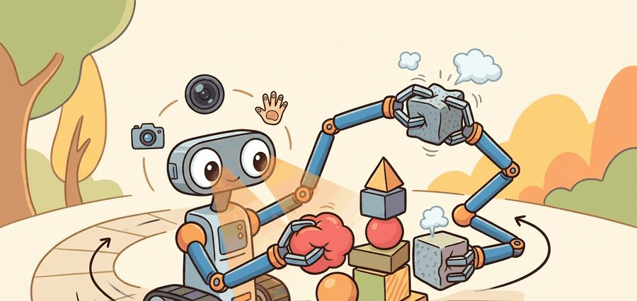
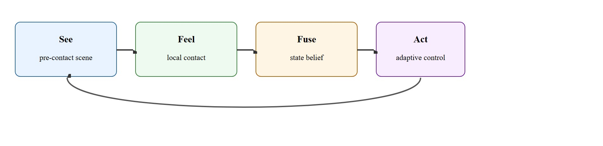
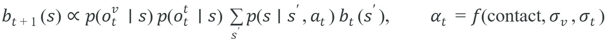

"Fusion is only useful when it changes what the robot decides next."
A Fusion Engineer's Whiteboard

This section synthesizes the tactile sensing pipeline introduced in sections 44.1 through 44.4, so familiarity with tactile sensor models (section 44.1) and slip detection (section 44.3) is assumed. The phase-aware fusion logic developed here reappears in Part X alongside whole-body contact estimation and compliant motion planning. The belief-state formulation connects directly to the uncertainty and state-estimation framework in section 8.6 and the agent belief model in section 2.7.
A robot reaches for a pill bottle half-hidden behind a cup. Vision gets it close enough to touch; then the fingertip sensor catches a millimeter of slip the camera never saw, and the grip tightens in time. Neither modality alone would have worked. Robots are finally leaving controlled bins for cluttered real environments, and that shift makes visuo-tactile fusion the decisive capability gap: vision goes blind the moment a finger occludes the contact zone, and touch alone has no map of where to reach. Here you will build the phase-aware fusion logic that hands authority from camera to fingertip at exactly the right moment, and wire it into a controller that acts on the combined belief.
The moment a robot's fingers close on an object, its camera goes blind at exactly the instant precise contact information becomes most valuable, and a fusion system that keeps trusting that blinded camera will confidently drop the object it was about to hold.
It synthesizes the whole chapter by turning multimodal sensing into a real control interface rather than a general claim that more modalities must be better.
Vision and touch should not always vote equally. The right fusion policy changes with distance to contact, occlusion level, slip risk, and what state variable the controller needs right now.

A common assumption is that combining vision and touch always produces a better system than either modality alone, because two information sources seem inherently more informative than one. This is wrong in embodied AI: fusing a stale or occluded visual signal with a reliable tactile signal at equal weight actively degrades performance compared with trusting touch alone, as the NeuralFeels results demonstrate. The correct mental model is that fusion quality depends entirely on when each modality is trusted: a well-gated phase-aware fusion outperforms either modality alone, while a naive or poorly timed fusion can underperform the single best modality on the task.
Vision offers global context and long-range target localization, while touch, read through the tactile sensor models introduced earlier in this chapter, offers precise local contact evidence after interaction begins. Fusion should therefore be conditioned on phase and uncertainty rather than forced into a static weighted average: this is called the contact-phase handoff problem, and getting it wrong is the most common reason visuo-tactile systems underperform either modality alone. Figure 44.5.1 traces this as a loop: the robot sees the pre-contact scene, feels local contact, fuses both into a single state belief, and acts on it, with control authority handed from camera to fingertip as the loop crosses contact onset.
A fusion system that keeps trusting vision after the finger has blocked the camera is not fusing two senses; it is averaging a good signal with a lie.
Why it matters physically: once a finger occludes the contact zone, the camera's signal goes stale, yet the controller still needs sub-millimeter pose estimates to prevent slip. Trust a confident-but-occluded visual feature and the robot overcorrects, drops the object, or crushes it. Actuators act on the fused belief, not ground truth, so a late handoff becomes grip failure.
How it works: the system tracks a contact-phase variable, estimated from a fingertip force threshold or tactile activation. Before contact, observation likelihood weights favor the vision model. At contact onset, the weight shifts toward the tactile likelihood: tactile uncertainty drops sharply while visual uncertainty spikes from self-occlusion. That same shift enables reliable slip detection once the camera can no longer see the contact patch. The gating function can be a hard threshold, a learned classifier, or a Bayesian surprise detector. In every case it outputs the reweighted fused belief that the downstream policy queries. Without this gating, a policy trained on static equal-weight fusion typically needs many thousands of contact episodes to learn when to distrust vision, since it must infer the phase structure implicitly from data. With explicit phase-aware gating, the same policy tends to converge much faster, because the gate directly removes an entire class of confounded training signal rather than leaving the policy to discover it on its own.
A useful formulation maintains a latent state with modality-specific observation models. The controller then updates its belief differently before contact, at contact onset, and during sustained manipulation.

Think of the belief state like a navigator's confidence spread on a paper chart. Before any landmarks appear, the navigator shades a wide region of the sea where the ship might be. The moment a lighthouse becomes visible, all the probability collapses toward a narrow patch near that known position. When fog rolls in and obscures the lighthouse, the navigator stops narrowing from visual fixes and instead uses depth soundings (touch, in effect) to keep the shaded region from spreading back out. The controller never knows ground truth; it only ever acts on which part of the chart is shaded, so keeping that shade tight and correctly placed is the whole game.
The navigator's shaded chart is a useful intuition, but it only becomes convincing once you see the same trust-shifting behavior produce measurable gains on real hardware. Concrete systems clarify what fusion actually buys. The NeuralFeels project (Meta FAIR, 2024) tracked object pose during in-hand manipulation by fusing DIGIT tactile images (DIGIT is an optical tactile sensor that reports a camera-like image of skin deformation at the fingertip, giving a dense contact readout instead of a single force value) with RGB-D frames. Tactile input alone drifted under occlusion, and vision alone lost track during contact-rich rolling. The fused belief cut median pose error roughly in half against either modality alone on the YCB object set in the reported benchmark, where YCB is a standard shared set of household objects (cans, boxes, tools) used across manipulation papers so results are directly comparable. In practice that separates a grasp that holds from one that drops: a 14 mm vision-only error misses a precision grip entirely, while the 7 mm fused error lands inside the contact patch. The gain peaked during the phases when one modality was occluded or uninformative, exactly the regime a static fusion weight cannot handle.
So far: fusion is phase-conditioned rather than static, it operates on a belief-state update over vision and touch likelihoods, and the NeuralFeels case shows that same trust-shifting logic roughly halving pose error on real hardware.
The system predicts state from vision before contact, shifts weight toward touch as local interaction begins, and exposes a fused belief to the policy or controller. The decisive engineering choice is the gating logic that decides when each modality should dominate.
# Reweight vision and touch after contact onset.
vision_sigma = 0.35
tactile_sigma = 0.12
contact = True
touch_weight = 0.7 if contact else 0.2
vision_weight = 1.0 - touch_weight
fused_uncertainty = round(vision_weight * vision_sigma + touch_weight * tactile_sigma, 3)
print({"vision_weight": vision_weight, "touch_weight": touch_weight, "fused_uncertainty": fused_uncertainty})vision_sigma, tactile_sigma) into a single fused_uncertainty value, flipping touch_weight from 0.2 to 0.7 when the boolean contact flag turns true.Trace the gate across three timesteps of a peg approaching a hole. Vision reports pose with standard deviation $\sigma_v$ and touch with $\sigma_t$; the fused uncertainty is $w_v\sigma_v + w_t\sigma_t$, with $w_t = 0.2$ before contact and $0.7$ after.
t = 1 (pre-contact, peg 8 mm above rim): no fingertip force, so contact is false. $\sigma_v = 0.30$, $\sigma_t = 0.40$ (touch is uninformative in free space). Weights stay vision-dominant: $w_v = 0.8$, $w_t = 0.2$. Fused uncertainty $= 0.8 \times 0.30 + 0.2 \times 0.40 = 0.24 + 0.08 = 0.32$. The controller trusts the camera and keeps descending.
t = 2 (contact onset, peg touches rim): fingertip force crosses the 0.5 N threshold, so contact flips to true and the gate fires. The finger now occludes the hole, so vision degrades to $\sigma_v = 0.45$ while touch sharpens to $\sigma_t = 0.10$. Weights flip: $w_v = 0.3$, $w_t = 0.7$. Fused uncertainty $= 0.3 \times 0.45 + 0.7 \times 0.10 = 0.135 + 0.07 = 0.205$. Note that fusion is now lower than vision-only ($0.45$) precisely because the gate distrusted the occluded camera.
t = 3 (seated, peg sliding into hole): contact stays true. $\sigma_v = 0.50$ (still occluded), $\sigma_t = 0.08$. Fused uncertainty $= 0.3 \times 0.50 + 0.7 \times 0.08 = 0.15 + 0.056 = 0.206$. A naive equal-weight gate would instead report $0.5 \times 0.50 + 0.5 \times 0.08 = 0.29$, roughly 40 percent worse, because it keeps averaging in the blind camera.
Expected output: The expected result shifts trust toward touch after contact. That is appropriate when local contact cues become more reliable than vision for the state variable the controller now needs.
Early fusion concatenates raw DIGIT tactile images with RGB-D frames before encoding. It is simplest and works on benchtop tasks where both streams stay live at a stable 30 Hz. In the NeuralFeels experiments with a Franka Panda hand, early fusion degraded under partial occlusion. The vision encoder had no mechanism to distrust its own confident but wrong predictions during contact-rich rolling.
Late fusion encodes each modality separately, using a ResNet (a standard convolutional image encoder) for the RGB stream or ViT patches (fixed-size image tiles fed into a vision transformer) for the tactile stream, then combines the representations at the prediction head. This tolerates DIGIT dropouts during high-force contact and makes it straightforward to ablate which modality carries each episode, which matters on real hardware where sensor dropouts have physical causes. Belief-state fusion maintains an explicit distribution over object pose or contact state and updates it with modality-specific likelihoods. It is the most principled choice for long-horizon in-hand tasks: when a 14 mm vision-only pose error would cause a grasp to fail, the belief filter shifts weight to touch the moment contact onset fires, rather than waiting for a learned gate to discover the regime shift from data.
When synchronizing vision and tactile streams in ROS 2, use message_filters.ApproximateTimeSynchronizer (a ROS 2 utility that pairs up messages from different topics whose timestamps are close but not identical) with a slop value no larger than half the tactile sensor's publish period. For DIGIT at 30 Hz the period is 33 ms, so set slop=0.015. A slop that is too large silently passes pairs that are tens of milliseconds apart, which makes disagreement episodes look like sensor noise rather than a sync problem. Log the actual timestamp deltas for the first few hundred pairs during bringup so you can confirm the synchronizer is behaving as expected before spending time tuning fusion weights.
ROS 2 message synchronizers, tactile libraries, and multimodal encoders make data transport manageable. The difficult part is still designing the phase-aware trust logic and auditing disagreement cases.
Equal-weight fusion is often lazy engineering. When one modality is uninformative or stale, averaging can be worse than trusting the better source decisively.
In peg insertion, vision places the peg near the hole, while touch takes over for local alignment and slip-free seating once the peg starts interacting with the rim.
Amazon Robotics deploys vision-tactile grippers whose fingertips carry contact sensors alongside the wrist camera: vision locates an item in a cluttered tote, then tactile feedback confirms a stable grasp and detects slip as the arm lifts, exactly the phase handoff this section describes. The camera goes blind the instant the fingers wrap an occluding object, so the gripper hands grip authority to touch to avoid dropping or crushing soft packaging during high-speed picks.
Vision and touch are like two strong opinions at a meeting. The trick is not to average them politely, it is to know which one has actually seen the problem from the right distance.
Visuo-tactile foundation models and cross-embodiment transfer (2024-2025). Large pretrained models are beginning to absorb tactile modalities alongside vision and language. UniTouch (Stanford HRI Group, 2024) trains a single encoder across heterogeneous tactile sensors by mapping each sensor's output to a shared latent space, enabling zero-shot transfer of visuo-tactile representations across robot hands that were never seen together during training. The key insight is that sensor-agnostic pretraining removes the bottleneck that previously forced teams to retrain fusion layers every time hardware changed.
Tactile world models for predictive manipulation (2024-2025). Rather than fusing modalities at inference time, recent work embeds tactile prediction directly into the world model so the controller can anticipate contact forces before they occur. TouchDreamer (CMU Robotics Institute, 2024) extends video diffusion to jointly predict future RGB frames and tactile images, giving a policy access to simulated contact feedback during planning. This turns the fusion problem inside out: instead of fusing observed signals, the model generates hypothetical tactile signals and selects actions that minimize predicted slip before contact happens.
Language-conditioned visuo-tactile policies (2025). Vision-language-action models are being extended with tactile tokens. RoboTwin (Shanghai AI Lab, 2025) conditions bimanual manipulation policies on language goals while fusing wrist-camera RGB with GelSight tactile patches (GelSight is an optical tactile sensor, similar in principle to DIGIT, that images the deformation of a soft gel skin) at the token level inside a transformer policy, achieving task success rates on contact-rich assembly that vision-only Vision-Language-Action (VLA) baselines could not reach.
Open problem for PhD students. All current visuo-tactile fusion benchmarks evaluate average task success, which hides whether fusion actually helps on the hardest disagreement episodes (occlusion, deformable objects, novel materials). A tractable thesis contribution is a structured disagreement benchmark: curate episodes where vision and touch make opposite predictions, measure how much each fusion architecture resolves the conflict correctly, and use that as the primary metric. This would give the field a principled way to compare fusion strategies beyond aggregate accuracy numbers.
When vision and touch disagree in your task, which modality should win, and what evidence supports that choice?
This topic ties the whole chapter together. This section is where the chapter's pieces finally connect. The fusion problem is about sensing, control phase, uncertainty, and action consequences all at once, which makes it a compact summary of embodied-system thinking.
A good advanced exercise is to compare early fusion, late fusion, and belief-state fusion on the same task. The comparison makes clear that the architecture question is inseparable from the control-phase question.
| Tool or Library | Role in the Topic | Builder Advice |
|---|---|---|
| ROS 2 synchronization tools | Timestamp alignment | Use them to keep multimodal episodes temporally coherent. |
| PyTouch | Tactile features | Useful for constructing tactile state estimates that can be fused with vision. |
| Belief-state or sequence models | Phase-aware fusion | Prefer them when uncertainty and contact phase change the best action materially. |
Build a simple fusion gate that changes modality weights at contact onset. Compare it with static equal weighting on a small insertion or slip-detection benchmark.
When fusion fails, inspect timestamp alignment, phase gating, and disagreement handling before changing the neural backbone. Many multimodal failures are systems bugs wearing a representation-learning costume.
Beginner (weekend): Build a contact-phase fusion gate in PyBullet using a simulated finger with a force sensor: switch modality weights from vision-dominant to touch-dominant when simulated contact force exceeds a threshold, and log fused uncertainty across an episode of pushing a block to a target. The key challenge is choosing a force threshold that fires reliably at contact onset without false positives from near-miss vibrations.
Intermediate (1-2 weeks): Implement late-fusion visuo-tactile pose tracking for a peg-insertion task in MuJoCo or Isaac Lab using LeRobot as the training harness: encode RGB observations with a small ResNet and simulated tactile normal maps with a separate encoder, then train a policy head on the concatenated latents. The key challenge is designing a disagreement-driven evaluation benchmark where one modality is deliberately occluded so you can verify the fused policy outperforms each single-modality baseline on the episodes that matter most.
Open tactile-learning library relevant for tactile feature extraction and fusion experiments.
Representative optical tactile hardware often fused with vision.
Visuo-tactile object-state inference project illustrating cross-modal fusion for manipulation.
Combining vision and touch works when modality trust shifts with contact phase, uncertainty, and the actual state variable the controller needs.
Design a disagreement benchmark in which vision is misleading but touch is informative, and a second benchmark with the opposite property. Explain how your fusion logic should react in each.
Continue to Chapter 45: Locomotion and Mobility, where this contact-and-fusion contract becomes the input to the next embodied capability.